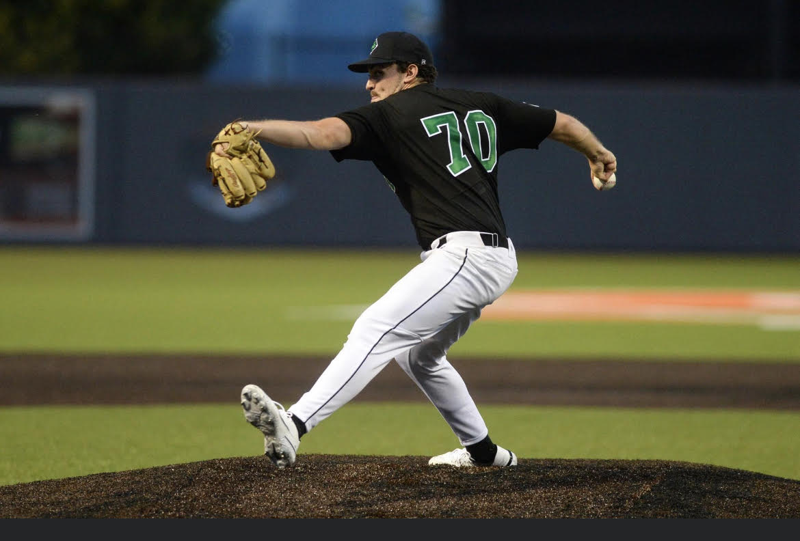

Terrence Beeker
Professional Independent Baseball Player
Bellmore, NY
With 5+ years of pitching instruction experience, I'm dedicated to improving young athletes' mechanics & helping them reach their full potential on the mound.
More About the Instructor
Hi, my name is Terry Beeker. Navigating the highs and lows of pitching is not easy. I've been through multiple shoulder injuries and have had Tommy John Surgery. I know what its like to have to start from the ground up and through the years I've learned how to maximize my growth.
Recently, I've had the opportunity to play professional independent ball with the Japan Islanders and the Irish Wolfhounds (Team Ireland WBC).
Learning from some of the best pitching coaches in the country (Tread Athletics, Driveline, Florida Baseball Ranch), I've accumulated knowledge from various GCP certified programs. With those resources, a HitTrax system, and my personal pitching experience, I believe I can help any pitcher reach their goals and help any hitter find their swing.